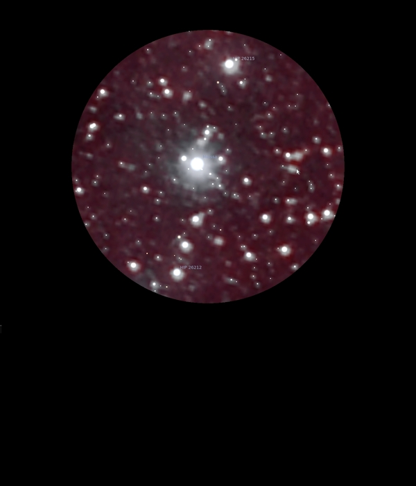

Collinder 69
Open Cluster in Orion
Lambda
Orionis Association
24/02/17
A really attractive Open Cluster of stars centred around Meissa,
λ
Ori, 39 Ori, HIP 26207 at Mag 3.5 which also has distinct
nebulocity around it
In 24mm there is a really attractive FOV where Meissa and φ1
Ori, 37 Ori, Hip 26176 at Mag 4.35 are either side and between
them and off to one side but balanced is a line of three
perfectly spaced stars, with HIP 26212 at Mag 6.70 the
brightest, but only slightly, the others being Mags 7.45 and
7.60
A neat FOV with numerous other stars, many with hints of
nebulocity around them